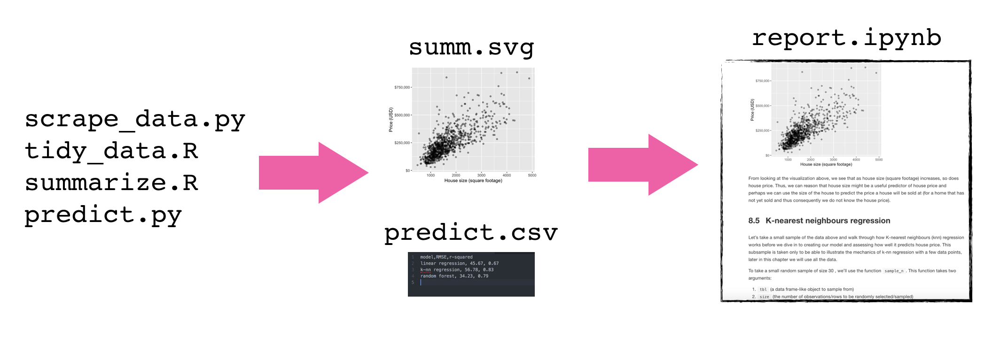

Lecture 4 - Data Analysis pipelines using a shell script
Contents
Lecture 4 - Data Analysis pipelines using a shell script#
Learning Objectives#
By the end of the lecture, students are expected to be able to:
Create a data analysis pipeline using R, Python and the Unix shell to run multiple scripts
Data analysis pipelines#
As analysis grows in length and complexity, one literate code document generally is not enough
To improve code report readability (and code reproducibility and modularity) it is better to abstract at least parts of the code away (e.g, to scripts)
These scripts save figures and tables that will be imported into the final report


Building a Data Analysis pipeline using a Shell script tutorial#
adapted from Software Carpentry
To illustrate how to make a data analysis pipeline using a shell script to drive other scripts, we will work through an example together. Here are some set-up instructions so that we can do this together:
Set-up instructions#
Download data_analysis_pipeline_eg-1.0.zip
Unzip it and change into the
data_analysis_pipeline_eg-1.0directory.
Let’s do some analysis!#
Suppose we have a script, wordcount.py, that reads in a text file,
counts the words in this text file, and outputs a data file:
$ python src/wordcount.py data/isles.txt results/isles.dat
If we view the first 5 rows of the data file using head,
$ head -5 results/isles.dat
we can see that the file consists of one row per word. Each row shows the word itself, the number of occurrences of that word, and the number of occurrences as a percentage of the total number of words in the text file.
the 3822 6.7371760973
of 2460 4.33632998414
and 1723 3.03719372466
to 1479 2.60708619778
a 1308 2.30565838181
Suppose we also have a script, plotcount.py, that reads in a data
file and save a plot of the 10 most frequently occurring words:
$ python src/plotcount.py results/isles.dat results/figure/isles.png
Together these scripts implement a data analysis pipeline:
Read a data file.
Perform an analysis on this data file.
Write the analysis results to a new file.
Plot a graph of the analysis results.
To document how we’d like the analysis to be run, so we (and others) have a record and
can replicate it, we will build a shell script called run_all.sh. Let’s work to try
to build this pipeline so it does all that!
# run_all.sh
# Tiffany Timbers, Nov 2017
#
# This driver script completes the textual analysis of
# 3 novels and creates figures on the 10 most frequently
# occuring words from each of the 3 novels. This script
# takes no arguments.
#
# Usage: bash run_all.sh
# perform wordcout on novels
python src/wordcount.py data/isles.txt results/isles.dat
# create plots
python src/plotcount.py results/isles.dat results/figure/isles.png
We actually have 4 books that we want to analyze, and then put the figures in a report.
Read a data file.
Perform an analysis on this data file.
Write the analysis results to a new file.
Plot a graph of the analysis results.
Save the graph as an image, so we can put it in a paper.
Let’s extend our shell script to do that!
# run_all.sh
# Tiffany Timbers, Nov 2018
# This driver script completes the textual analysis of
# 3 novels and creates figures on the 10 most frequently
# occuring words from each of the 3 novels. This script
# takes no arguments.
# example usage:
# bash run_all.sh
# count the words
python src/wordcount.py data/isles.txt results/isles.dat
python src/wordcount.py data/abyss.txt results/abyss.dat
python src/wordcount.py data/last.txt results/last.dat
python src/wordcount.py data/sierra.txt results/sierra.dat
# create the plots
python src/plotcount.py results/isles.dat results/figure/isles.png
python src/plotcount.py results/abyss.dat results/figure/abyss.png
python src/plotcount.py results/last.dat results/figure/last.png
python src/plotcount.py results/sierra.dat results/figure/sierra.png
# write the report
Rscript -e "rmarkdown::render('doc/count_report.Rmd')"
Another example:#
From the breast cancer prediction example analysis repo, here is a data analysis pipeline using a shell script:
# run_all.sh
# Tiffany Timbers, Jan 2020
# download data
python src/download_data.py --out_type=feather --url=https://archive.ics.uci.edu/ml/machine-learning-databases/breast-cancer-wisconsin/wpbc.data --out_file=data/raw/wdbc.feather
# run eda report
Rscript -e "rmarkdown::render('src/breast_cancer_eda.Rmd')"
# pre-process data
Rscript src/pre_process_wisc.r --input=data/raw/wdbc.feather --out_dir=data/processed
# create exploratory data analysis figure and write to file
Rscript src/eda_wisc.r --train=data/processed/training.feather --out_dir=results
# tune model
Rscript src/fit_breast_cancer_predict_model.r --train=data/processed/training.feather --out_dir=results
# test model
Rscript src/breast_cancer_test_results.r --test=data/processed/test.feather --out_dir=results
# render final report
Rscript -e "rmarkdown::render('doc/breast_cancer_predict_report.Rmd', output_format = 'github_document')"
Closing thoughts#
What are the advantages to using a data analysis pipeline?
How “good” is a shell script as a data analysis pipeline? What might not be ideal about this?
What’s next?#
Using a smart dependency tool, GNU Make, to make smarter pipelines.